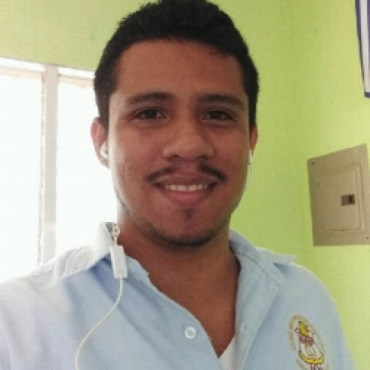

A Special Thank You
With deep gratitude, we extend our most sincere thanks to the Green Lawn Church of Christ. You have been the first and only pillar of financial support for the Pineda Amador Family Ministry. Your faith and generosity make our work possible.
Visit the Green Lawn Church of Christ website
Support Our MinistryNewsLetter & Featured Videos
Stay updated on our mission and activities from November 2025 through October 2026.About the Pineda Amador Family Ministry
Juan Pineda
I was baptized into Christ in 2011 after listening for some time to a radio program produced by the Church of Christ. That same program would later become part of my ministry, as I eventually became its director. Driven by a desire to grow in the Word, I went on to study at the Biblical Institute of Nicaragua. During one of our mission trips, I met my wife, Ana Amador. We later married and have now been serving the Lord together for ten years. God has blessed us with two wonderful children, Jesús and Juan. I am currently pursuing a Bachelor's degree in Theology at the Sunset International Bible Institute, preparing myself to serve more effectively in the Kingdom of God
Ana Amador
I was born and raised in the Church of Christ, the daughter of Ezequiel Amador—a respected preacher in Nicaragua and longtime minister of one of the country’s oldest congregations, the Church of Christ in Sutiava. From a young age, I developed a deep love for teaching children. I began serving in the children's ministry when I was just 12 years old, and I’ve remained committed to that calling ever since. My vision is to expand and strengthen the ministry of teaching children, helping them grow in faith, love, and understanding of God’s Word. I believe that planting the seed of the gospel early in life builds a strong foundation for lifelong discipleship.
Teaching and Edification Resources
Recent Sermons
Access sermons, Bible studies, and conferences from our local ministry.
View CollectionUKBI Institute Library
Exclusive collection of study guides and books. Authorized by Brother Mike for global distribution.
Access LibraryChildren's Ministry Material
Lessons, activities, and guides for parents and children's teachers in the church.
Download ResourcesJoin the Mission
Your support is vital for the Pineda Amador Family to continue serving and expanding the Kingdom. Every donation allows us to focus on preaching and children's ministry.
Support Us.We thank you in advance for your generosity in Christ.